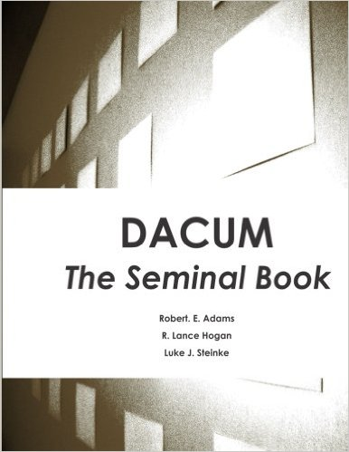

DACUM: The Seminal Book Paperback – Aug 18 2014
 by Robert Edwin Adams (Author), Roger Lance Hogan (Author), & 1 more
CDN$ 168.73
2 Used from CDN$ 109.81
8 New from CDN$ 132.59
Unlimited FREE Two-Day Shipping for Six Months When You Try Amazon Student
Special Offers and Product Promotions
Get a CDN $20 Amazon.ca Gift Card: Thank you for shopping at Amazon.ca. Your cost could be $148.73 instead of $168.73! Get a CDN $20.00 gift card instantly upon approval for the Amazon.ca Rewards Visa Card. Apply now.
Tell the Publisher!
I'd like to read this book on Kindle
Product Details:
Paperback: 372 pages
Publisher: Edwin & Associates, LLC (Aug. 18 2014)
Language: English
ISBN-13: 978-0990717607
Product Dimensions: 21.6 x 2.1 x 27.9 cm
Shipping Weight: 1.1 Kg
Dr. Luke J Steinke - Eastern Illinois University
https://www.eiu.edu/techgrad/faculty.php?id=lsteinke&subcat=
Dr. Steinke holds a PhD in Workforce Education and Development from Southern Illinois University, a Master's degree in Training, Development, and ...
Dr. R Lance Hogan - Eastern Illinois University ::
www.eiu.edu/include12/global/profile.php?id=rlhogan
Hogan, R.L., & Garling, N. (2008). Bortz's learning module: An alternative approach to training program curriculum development. The Journal of Human ...